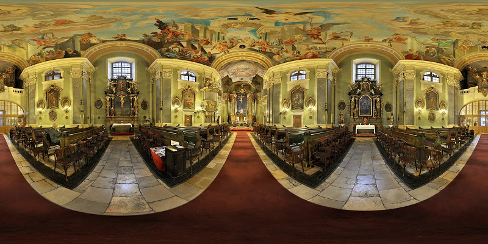
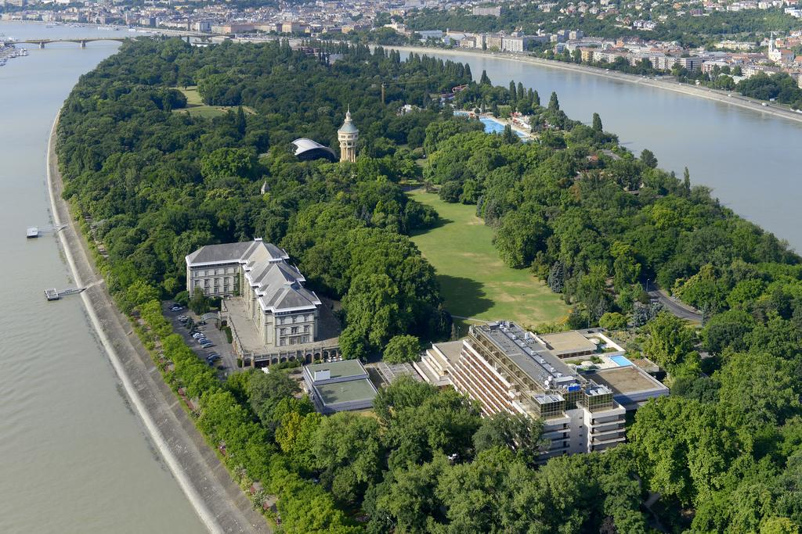
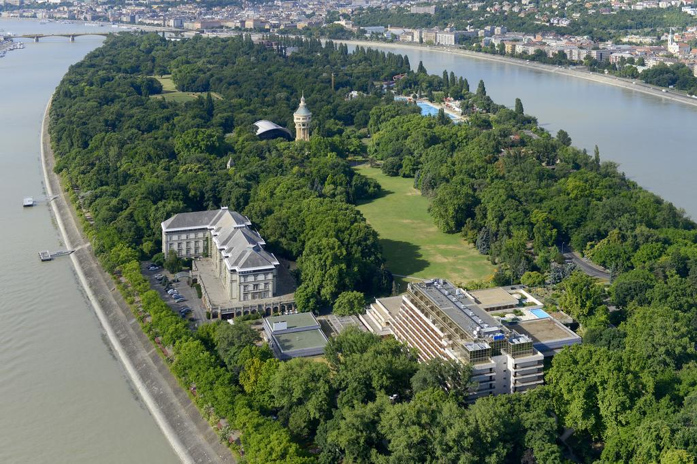

|
|
|
|
Már csak nap és hamarosan örök hűséget esküszünk egymásnak. Ezen a napon fogjuk szerelmünket és együttélésünket házassággal megpecsételni.
|
| Már a legelejétől sejttettük, hogy az esküvőnk megszervezése komoly feladatot jelent, rengeteg munkával jár, nagy odafigyelést, türelmet, pontosságot és szervezőkészséget igényel, azonban nem gondoltuk, hogy ennyire. Nem túlzunk, ha azt mondjuk, hogy az izgatottság mellett nagyfokú nyomás és ijedség is volt bennünk. Miután azonban eddigi közös életünket is folyamatosan sikerrel menedzseltük, így ez sem gördített akkora akadályt elénk, mint ahogy azt először gondoltuk. |
| Már a lánykérés utáni első hetekben belevetettük magunkat a szervezésbe, az első hónapban pedig már elkészítettük a forgatókönyv és a költségvetési tervezetet is hozzá. Jól ismertek minket, nem szeretünk semmit a véletlenre bízni, és ez most sem történt máshogy - sőt. |
| Grand esküvő, Grand helyszín |
| Életünk egyik legboldogabb eseményének optimális helyszínét és időpontját kerestük. Olyan megoldást szerettünk volna, ami minden szempontunkat teljes mértékben kielégíti. Szerencsére már voltak konkrét elképzeléseink, csak a megbizonyosodás volt szükséges. |
| Így esküvőnket 2017. augusztus 19-én (szombaton) tartjuk. |
| A polgári ceremónia és a rendezvény helyszínéül az Ybl Miklós által tervezett, neoreneszánsz stílusú Grand Hotel szolgál. A patinás, négycsillagos szálloda Budapest szívében, a festői szépségű Margitszigeten helyezkedik el. Történelmi épülete, kifinomult belső kialakítása és eleganciája békebeli, arisztokratikus hangulatot sugároz a mai napig. |
|
Budapest legrégebbi szállodája.
1873-ban nyílt meg és azóta is az ország egyik legnépszerűbb gyógyfürdője, mivel három hőforrás is táplálja. (Ebben az évben egyesült egyébként Pest, Buda és Óbuda.) Az egyik legjobb állapotban lévő történelmi szállodája a városnak. |
|
„Akit párodul melléd rendelt az ég, Becsüld meg, szorítsd meg kezét, És ha minden álmod valósággá válik, Akkor se feledd el, légy hű mindhalálig.” -Madách Imre |
|
|
| Holtomiglan holtodiglan |
| Számunkra az esküvőt mégis az egyházi szertartás teszi teljessé, ez adja az esemény igazi varázsát. Belépni a templomba, végigvonulni a padok között orgonaszó kíséretben - ez mind rendkívül megható. Azonban áldás után férj, illetve feleségként azokkal a szavakkal távozni, hogy „amit Isten egybekötött, azt ember szét nem választhatja” - ez a csodálatos az esküvőben. Egyedül itt tehetjük a legmélyebb tanúbizonyságot elhatározásunk komolyságáról és visszavonhatatlanságáról. Számunkra nem volt kérdés a templomi ceremónia, melynek helyszíne a budai rakparton lévő, a Parlamenttel szemben elhelyezkedő Szent Anna templom. |
|
„Amikor megszólal az orgona zenéje Elhangzik mindkettőnk ajkán az igen Sorsunk ekkor eggyé forr majd össze Szeretni akarlak, megtartani örökre.” -Ady Endre |
|
templom fotó |
| Kék Duna keringő |
| A helyszínek közötti utazást egyedülálló módon szerettük volna megoldani, így hajóra szállunk! Az Aquincum nevű hajóval fogunk közlekedni a hotel és a templom között becsempészve a visszaútba egy 1 órás hajós városnéző utat is, ahol egészen a Gellért-hegy vonaláig teszünk egy kitérőt. Világörökség részét képező panorámával és a Duna simogató hullámaival szeretnénk még felejthetetlenebb élménnyé tenni a Nagy Napunkat. |
|
|
 Hotel fotó
Hotel fotó 
 templom fotó
templom fotó templom fotó
templom fotó Hajó fotó
Hajó fotó